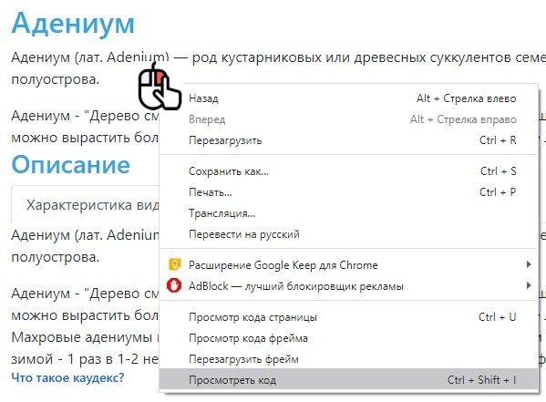
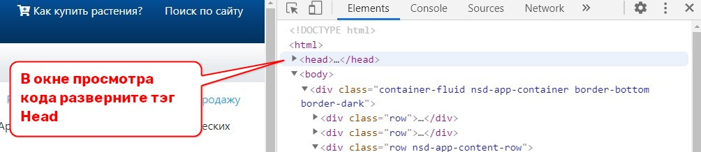
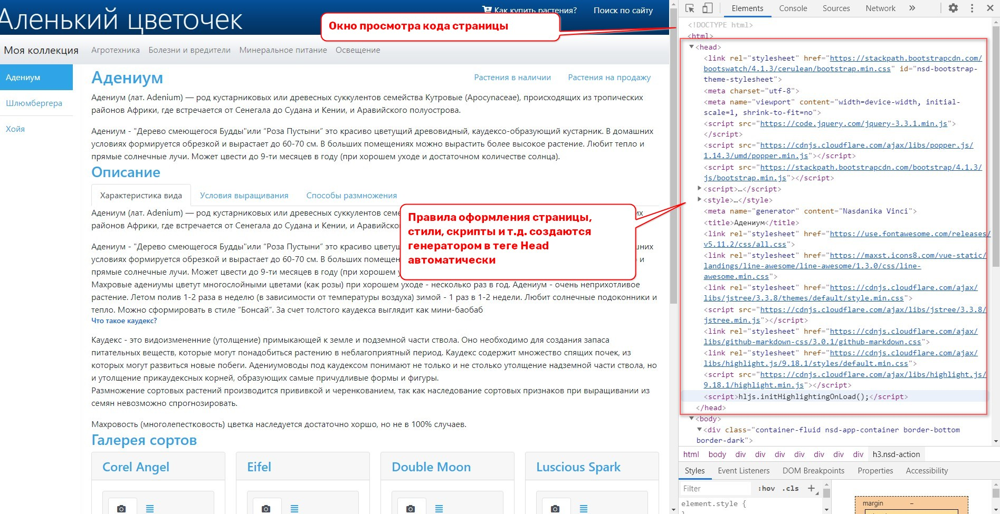

Для того чтобы сайт выглядел красиво, необходимо не только ввести текст и указать путь к изображениям, которые будут отображаться при открытии HTML страниц. Необходимо так же указать: какие элементы будут использоваться на страницах и прописать правила оформления этих элементов. Как оформить тот или иной элемент страницы описывается в каскадных таблицах стилей (по английски они называются CSS).
Теперь давайте посмотрим: что бы получилось без использования таблиц стилей и скриптов.
Откроем любую страницу сайта. Например, раздел Адениум. Включим просмотр кода и удалим всё, что находится между открывающим и закрывающим тегом head.
А теперь посмотрим на результат и убедимся в том, что он поистине ужасен.
Так вот, смысл использования фреймворка Bootstrap состоит в том, что некие добрые люди придумали: какие элементы могут использоваться на странице и дали этим элементам имена (или классы).
Так же они создали каскадные таблицы стилей, в которых описано: как должны быть оформлены элементы страницы, которым присвоены bootstrap классы.
А другие добрые люди чуть чуть изменили эти правила оформления и предоставили всему миру 20 беспатных тем оформления, которые можно увидеть на сайте https://bootswatch.com.
Использование фреймворка Bootstrap позволяет нам не задумываться об оформлении страницы - мы можем просто сказать спасибо тем людям, которые за нас уже подумали о том как сделать красиво, Нам остаётся только следовать тем правилам, которые эти люди установили.
В то же время, если какие-то из настроек определённых в bootstrap-теме нам не нравятся или не подходят, то мы можем их переопределить для каждого конкретного элемента страницы. Результат этого переопределения может быть не всегда удачным, но Nasdanika Vinci не ограничивает свободы творчества - вы можете управлять внешним видом своей страницы, если у вас есть необходимые для этого знания.


